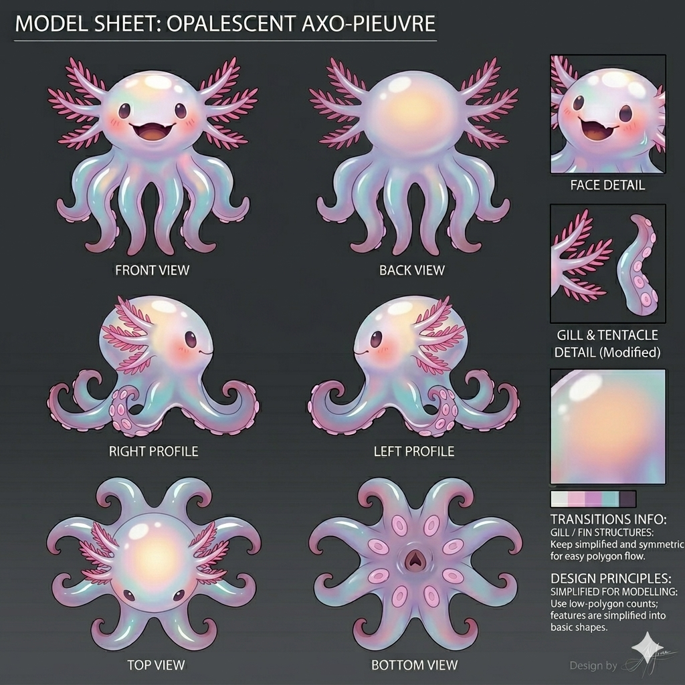
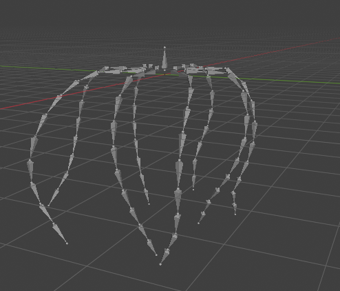
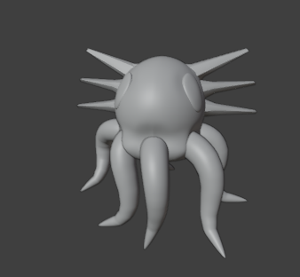
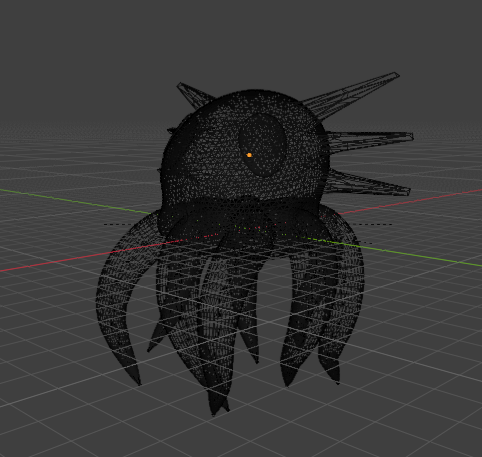
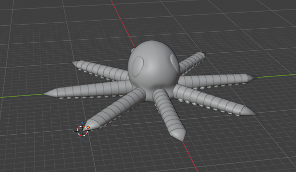

Exploration de la morphologie 3D temps réel
Ce projet fil rouge s'inscrit dans l'UE GFX. Le but étant de gagner en compétences sur :
Élaborer un diagnostic avec une vision systémique sur le domaine de la 3D en identifiant et analysant les
principaux enjeux, verrous techniques et scientifiques afin d'aboutir à une modélisation correcte et
optimale.
Nous avons été amenés à voir les bases de la modélisation 3D : maillage, rig et animation.
Nous devions créer une pieuvre imaginaire. Le projet visait donc à fusionner deux espèces : l'axolotl
(pour sa tête et ses branchies) et la pieuvre (pour ses tentacules et sa structure de mouvement).
Partant de zéro connaissance, le défi était d'apprendre Blender sur un projet
stimulant et laissant de la liberté grâce au côté imaginaire de la créature à créer.
Avec l'aide de l'IA (Gemini), un modèle sous tous profils a été créé, à partir d'image d'inspiration.
Cette phase de conception a permis d'établir les proportions avant d'attaquer la modélisation, afin de
garantir une cohérence et avoir un rendu plus ou moins réaliste.

Les premières étapes :



Le but était d'avoir des notions sur blender, logiciel largement utilisé dans le domaine et gratuit. Il est plutôt polyvalent (modélisation, rigging, animation, export, ...).
Ce format a été privilégié lors des rendus car c'est un format standard, notamment pour le
web. Il permet d'encapsuler le maillage, les textures et les animations dans un fichier unique et
plutôt, notamment pour le temps réel.
Il a été privilégié également pour la création de la scène sur ThreeJs Editor, car le format .fbx a posé
quelques soucis pour l'exportation du modèle en entier et des shaders.
Chaque tentacule est animée ainsi que la tête actuellement. Le mouvement se veut un minimum naturel, avec un mouvement de tête, s'écrasant ou s'étirant pour créer un effet de flottaison.
J'ai décidé de mettre mon octolotl dans un univers d'océan, c'est ce qui correspond le mieux à l'idée
que je me fais de cette créature. J'ai donc créé une scène avec une image equirectangulaire pour donner
un aspect immersif à la scène. Ainsi, l'utilisation d'une image HDRI permet de simuler un éclairage
complexe. Les reflets sur la texture "pearl-skin" réagissent de manière assez réaliste à son
environnement, simulant la lumière sous l'eau.
J'ai également ajouté une lumière pour éclairer ma créature.
Lien de la demo en web.
La partie texture a été la première épreuve : seule la tête a été sélectionnée pour commencer la texture, or les tentacules auraient été difficiles à intégrer sur l'UV map. Ainsi un autre "problème" a été mis en avant : en ayant suivi le tuto fourni, les tentacules étaient articulés avec un effet mécanique. Il a été choisi de repartir sur une autre base pour les tentacules : les faire en un seul bloc chacun, affiné pour ressembler à de vrais tentacules. Et de refaire l'UV mapping pour les textures.

L'animation a été mal réalisée, il y en a plusieurs, une animation pour chaque tentacule et une pour la tête. Il aurait fallu faire une animation pour tout, en même temps, plutôt que les animer un par un. Techniquement cela a créé des problèmes, des conflits lors de l'intégration web. Dans ce REX notamment, car le "model-viewer" ne lit nativement qu'une seule piste. Pour résoudre ce problème, sans retourner sur Blender, un script est nécessaire pour synchroniser les couches d'animation en parallèle.
L'export du modèle de l'octolotl a été compliqué au début, car d'abord exporté de blender dans le format .FBX, la tête n'apparaissait jamais et les shaders/textures non plus, sans que la raison ne soit élucidée. Finalement, le format .glb a été privilégié pour l'export, et le problème a été résolu de cette façon. Cependant, cela a pris un temps considérable pour la réalisation de la scène...
Ce projet a été formateur. J'ai pu apprendre des notions de blender, me rendre compte des compétences à
développer, à avoir pour faire de la modélisation, de l'animation. Même si savais que c'était un métier,
et même chaque partie (textures, animation…) peut être un métier à part entière, je peux mieux
visualiser ce que cela représente.
C'est quelque chose qui m'intéresse beaucoup comme domaine.
Pour cette créature, je ferais les branchies autrement, de manière plus précise et organique, à la place
d'extensions de la tête à la manière de cornes actuellement... Ce qui permettrait de les animer
également, en faisant donc un rigging de meilleure qualité.
L'animation peut sans aucun doute être améliorée, un mouvement encore plus naturel et fluide ou même une
animation plus recherchée comme tenir un objet. J'avais pensé à faire tenir des algues dans un tentacule
pour faire manger un poisson.
Même si j'aurais apprécié d'avoir plus de temps pour la réalisation de ce projet intéressant, d'avoir le cours de l'intervenant d'un expert du milieu et orienté jeux-vidéos. Je suis plutôt satisfaite du résultat final, notamment des tentacules qui ont une animation plutôt fluide et organique pour une première fois, de l'aspect général de la créature, qui correspond un minimum à ce que j'avais imaginé au départ. Je suis satisfaite d'avoir pu apprendre toutes ces notions et du résultat final pour une première expérience en modélisation et animation, et sur le logiciel.